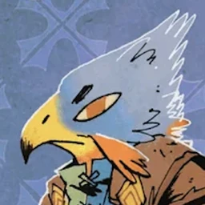
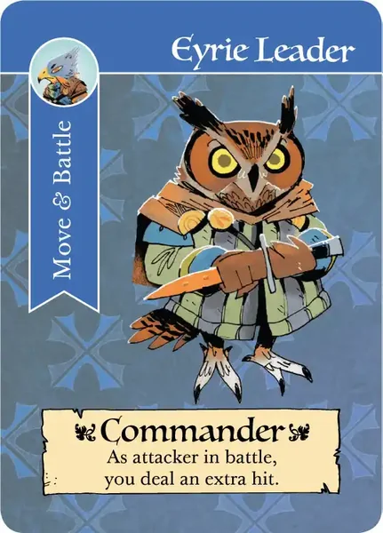
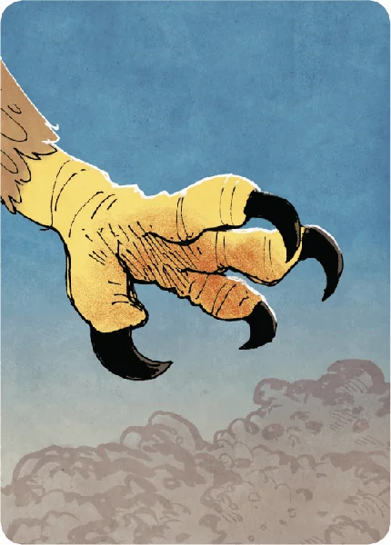
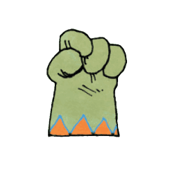
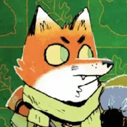

Four map animations proposed for the React client: Vagabond explore, Eyrie turmoil, Eyrie leader pick, Alliance revolt. All use the real game art and the client's parchment palette. Banners use the game's own torn-paper kit (root-paper): the parchment prompt strip of the turn banner, faction-coloured paper like the bot banner head, and small rust tiles for stamps. Each stage plays once on load. Hit Replay to watch it again, and read the beat sheet beside it for timings.
Vagabond explores a ruin
F
7
+1
Vagabond explores the ruin
Eyrie fall into turmoil

TurmoilCould not Recruit in a fox clearing
Leader


Recruit
✕
Move
Battle
Build
12
−4 VP · Humiliate
Deposed
Eyrie are choosing a leader.
Eyrie choose a new leader
Eyrie are choosing a leader.
Builder
Charismatic
Deposed
Deposed
Recruit
Move
Battle
Build
Woodland Alliance revolt
F
F
F
3

✶✶✶✶✶
9

Revolt!The fox clearing rises up
Open questions
Turmoil + leader as one sequence? The mock plays them back to back (about 8 s total). I can also cut the decree tour down to just the stamp for faster games.
Skip on click? Proposed: any click on the dim skips to the end state, as for battles.
Bot speed. Proposed: the bot pace setting scales these durations the same way it scales moves.


 7
7


 12
12


 3
3


 9
9